Turn revision into play
Children revisit school skills through short activities that feel lighter than extra homework.
For parents of children in Grades 1–4. How to raise a happy, curious child in a world full of screens.

If you have a child in Grade 1, 2, 3 or 4, you know this pattern: the phone can quickly become the most fought-over object in the house.
Your child is growing up at a time when one screen can be a classroom, a gaming console, a television, a video call with Nani, a homework helper and an endless entertainment machine, all at once. So the goal cannot simply be “no screens.”
How PW Games can help your child
Short puzzles and story-led games help children practise school skills, think through problems and see their progress.
Our vision: To help parents turn screen time into a healthier, more purposeful experience, where children have fun, stay curious and learn through play while building confidence.
Children revisit school skills through short activities that feel lighter than extra homework.
Puzzles, choices and recall ask children to participate instead of simply keeping watch.
Levels finish, creating a more natural moment to put the screen away.
Parents can see what was practised and talk about what the child learned.
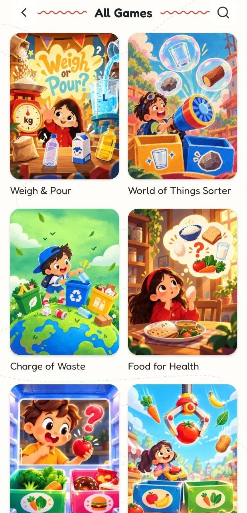
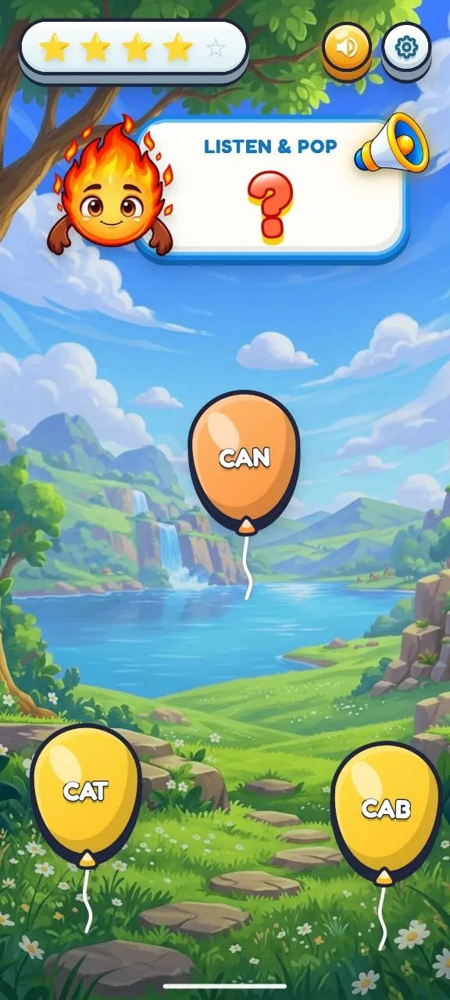
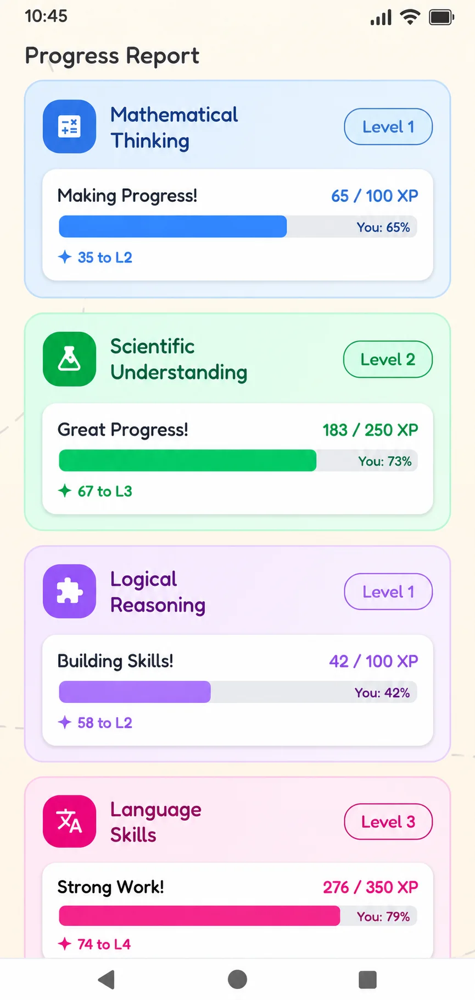
A learning game is still screen time. It should add to childhood, not replace sleep, outdoor play, reading, conversation or the useful freedom of being bored.
Sixty minutes is sixty minutes. But two children can spend the same hour in completely different childhoods.
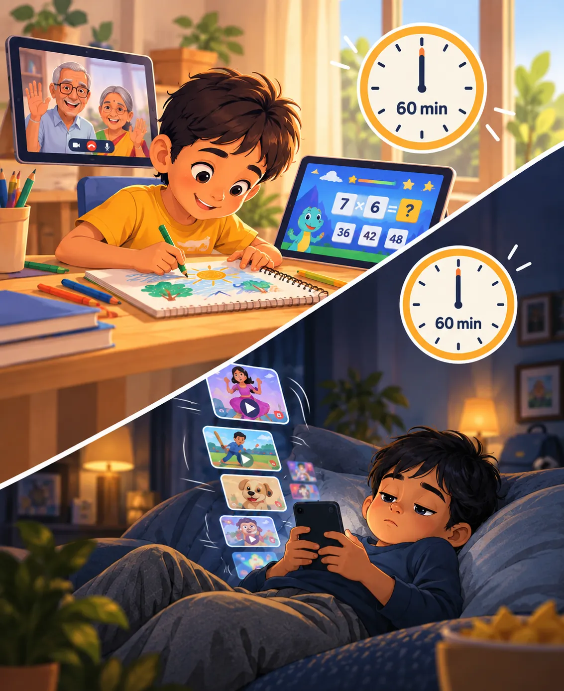
The same 60 minutes
Both are "one hour of screen time." They are not the same. Before you count minutes, ask four questions.
What is my child actually doing on the screen?
After school, during homework, at dinner or near bedtime?
Creating, learning or playing, or just being served content?
Sleep, outdoor play, reading, conversation, family time or hobbies?
Higher screen use has been linked with poorer sleep, reduced physical activity, attention difficulties and emotional and social challenges. At the same time, limited, educational and co-viewed use can be different from passive consumption.1
Don't just count screen minutes. Look at what your child is doing, when they're doing it and what those minutes are replacing.
Your child is not being difficult. They are competing against a product designed so that stopping never feels natural.
The video ends. And then…
Another one starts automatically.
Children in Grades 1–4 are still developing their ability to regulate impulses and attention. Digital products also remove the natural reasons to stop: there is always another video, level, reward, notification or recommendation.
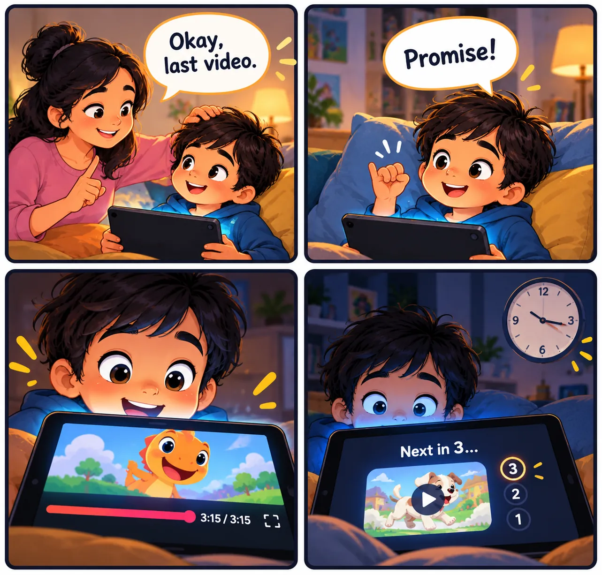
What parents call "brain rot"
The phrase is informal, not a diagnosis. But it describes a pattern parents increasingly recognise:
A 2025 research scale described digital overconsumption using three dimensions:2
A child should not grow up believing that every activity needs to be instantly exciting.
Reading
An instrument
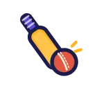
Cricket
A hard puzzle
Building
All of these feel slow. That does not make them bad. It makes them valuable, and it is why a game that asks for a little effort beats a feed that asks for none.
Don't only teach your child when to stop using a screen. Teach them to enjoy things that take time.
Nothing in a normal afternoon looks dramatic. The cost only appears when you add it up.
A typical school day
An illustrative day, not a measured research result.
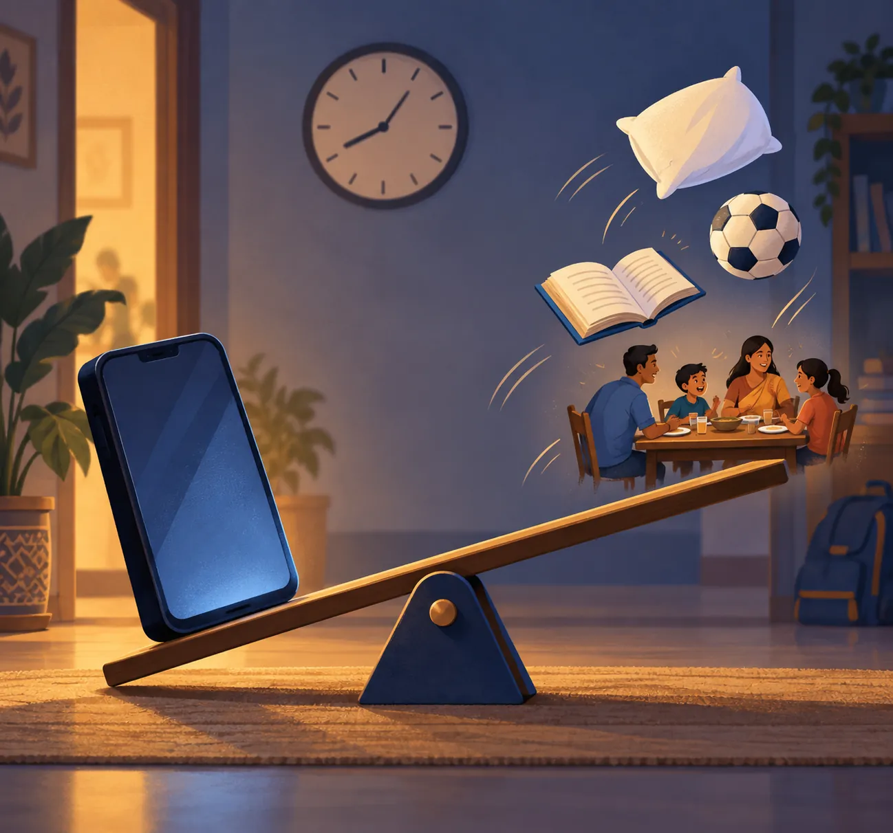
A prospective cohort study of elementary-school students found that higher total screen exposure before age 8 was associated with lower reading and mathematics achievement, with roughly 10% lower odds of being in the higher achievement levels for each additional hour of daily screen time.3
Protect these five things fiercely
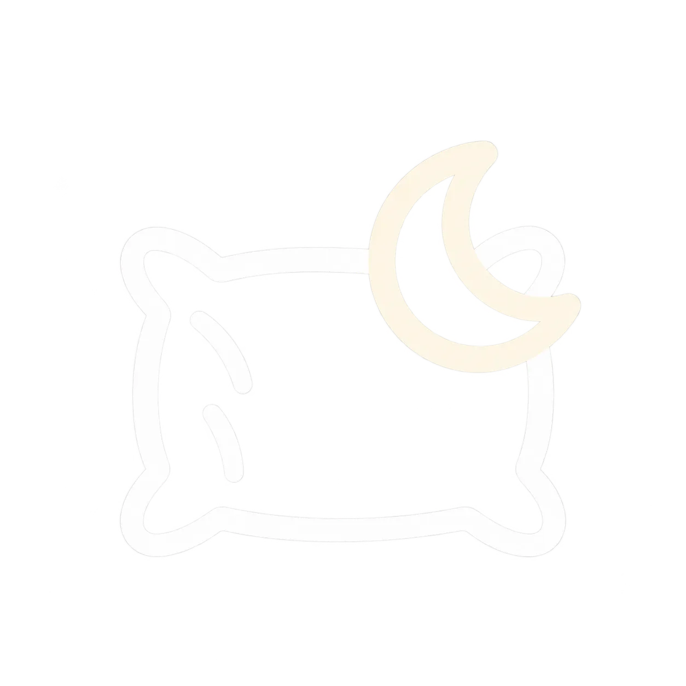
The real danger is not just "too much screen." It is what the screen quietly pushes out of your child's day.
Children need more than rules. They need an environment that makes healthy choices easier, and adults who follow the same boundaries.
A Grade 1 child shouldn't have to win a self-control competition against an algorithm built to keep them watching.
Of course children need to learn self-control eventually. Until then, make the healthy choice the easy choice.
Do not make the phone the prize
When the phone becomes both reward and punishment, it starts to feel like the most valuable object in the house. Make access predictable instead of negotiable.
Food is for eating. Dinner is for talking. And yes, parents too.
Create a screen-free window of around 30–60 minutes before bedtime.5
Not beside the notebook. Not face down. Not on silent. Away.
Homework. School prep. Some physical activity. Basic responsibilities. Then entertainment.
If your child keeps the phone away at dinner while Dad checks WhatsApp, the lesson is clear: the rule is negotiable.
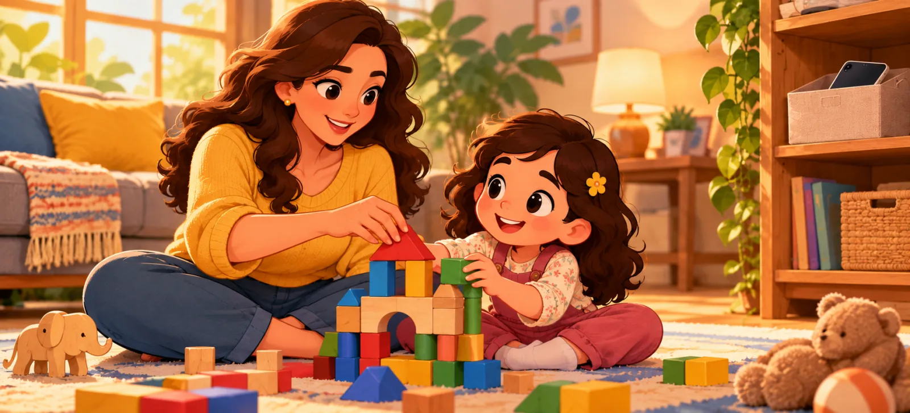
Put your phone away, not face down beside you. Let your child choose what to do together: play, draw, walk, build or talk.
Children calibrate to what we do, not only what we say.Make screens predictable, keep them out of the bedroom, and follow the rules yourself. The home teaches before the lecture does.
"Then what do I do?" is a fair question. If the answer is "nothing," the phone will win.
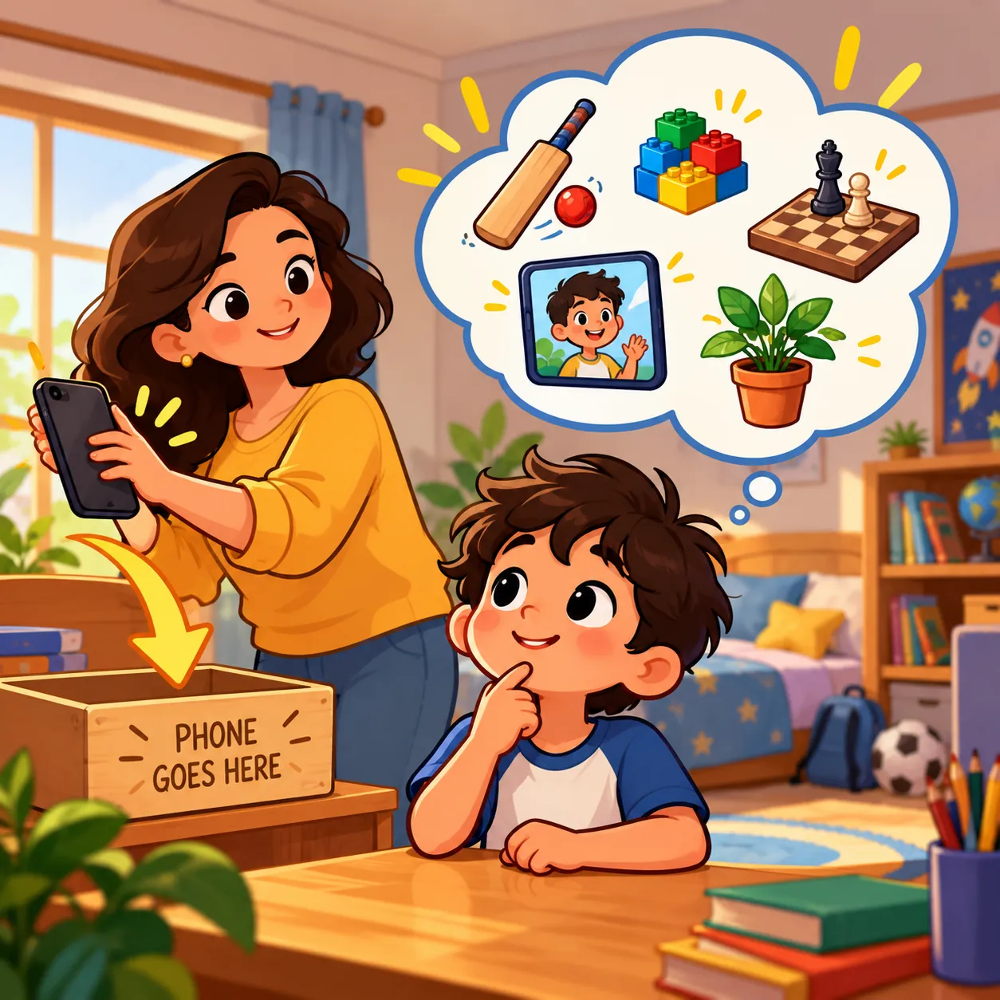
Honestly, that's a fair question. So build the answer before you need it. Create a boredom menu: a list on the fridge your child can go to without asking you.
And please let them be bored
The first few times you will hear "I'm bored." "There's nothing to do." "I have NOTHING!" Resist the urge to hand over the phone. The goal isn't a child who is always occupied. It is a child who can occupy themselves.
The boredom menu
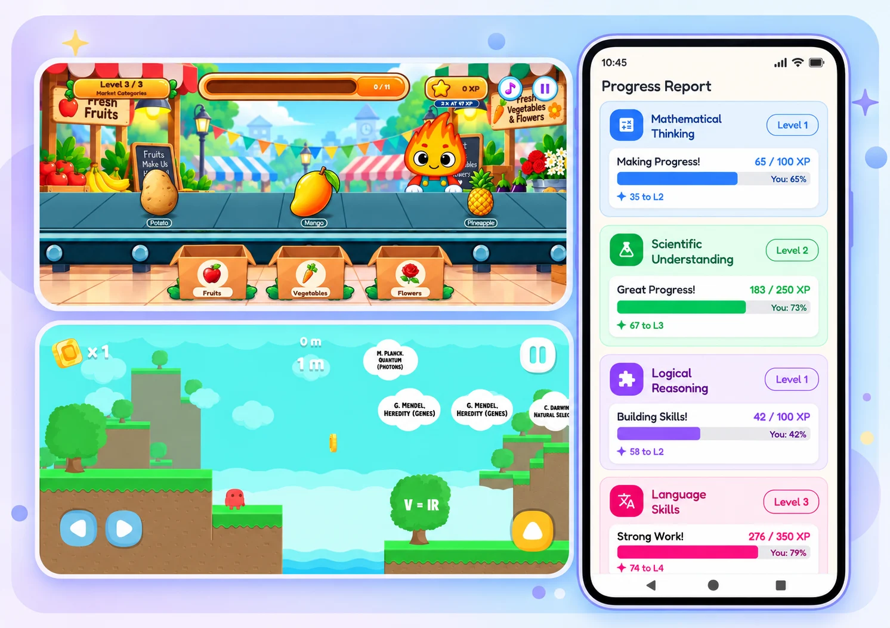
When the screen stays on
Not every screen minute has to disappear. When your child does play, choose activities that ask them to notice patterns, solve problems, recall ideas and finish a level.
PW Games turns Maths, Science, English and Mental Ability into short, purposeful challenges - a better bridge between entertainment and learning.
One habit at a time, for four weeks, until the new routine stops feeling like a rule. Then write it down together.
Open the screen-time report. Which apps? How much? What time of day? What happens before your child picks up the phone, and when you ask them to stop?
Then introduce two boundaries: no devices in bedrooms; no screens before bed.
Choose one chunk of screen time and replace 30–45 minutes with something real:4 outdoor play, a family walk, a board game, art, reading, cooking.
Look at the content itself. Can some passive consumption become creative, interactive, educational or social? Don't aim for zero screen. Aim for better screen.
Look for games with levels that finish, not feeds that never do. PW Games' free games are one place to start.
Same charging station. Same bedtime rule. Same dinner rule. Same homework set-up. Same expectations, same consequences. No daily negotiations. Fill in the plan on the right and put it on the fridge.
Don't try to fix your child's entire digital life in one day. Change one habit at a time until the new routine becomes normal.
Not every child who loves gaming has a problem. Not every child who watches YouTube daily is "addicted." A tantrum when the iPad goes away is not a diagnosis. Look at the pattern, not one incident.
Screens are present, but sleep, school, movement, hobbies and family life are all intact.
Screens are increasingly interfering. One or two areas of life are slipping.
Persistent impairment across sleep, learning, movement or relationships.
of reviewed studies reported declines in face-to-face communication, empathy or emotional sensitivity.
of reviewed studies reported academic disengagement or lower performance.
If you are seeing amber or red, start with the basics
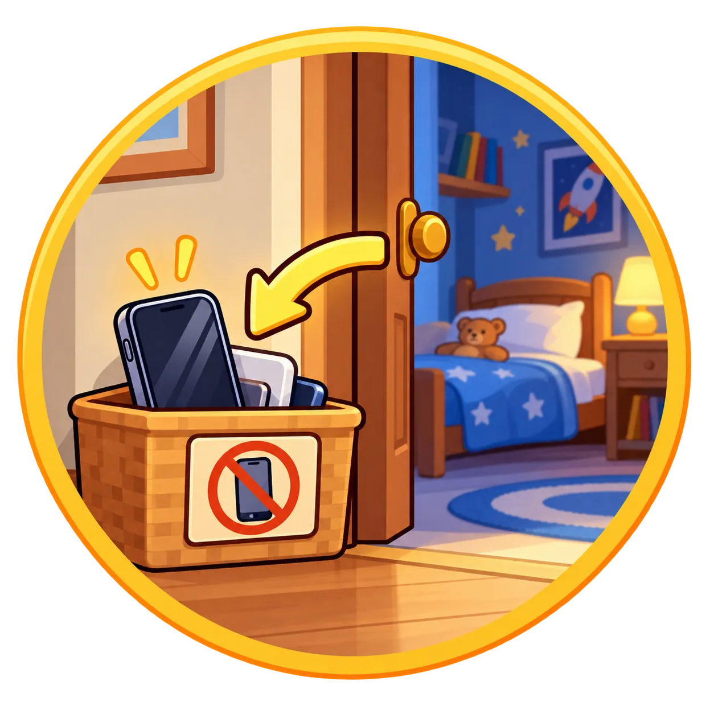
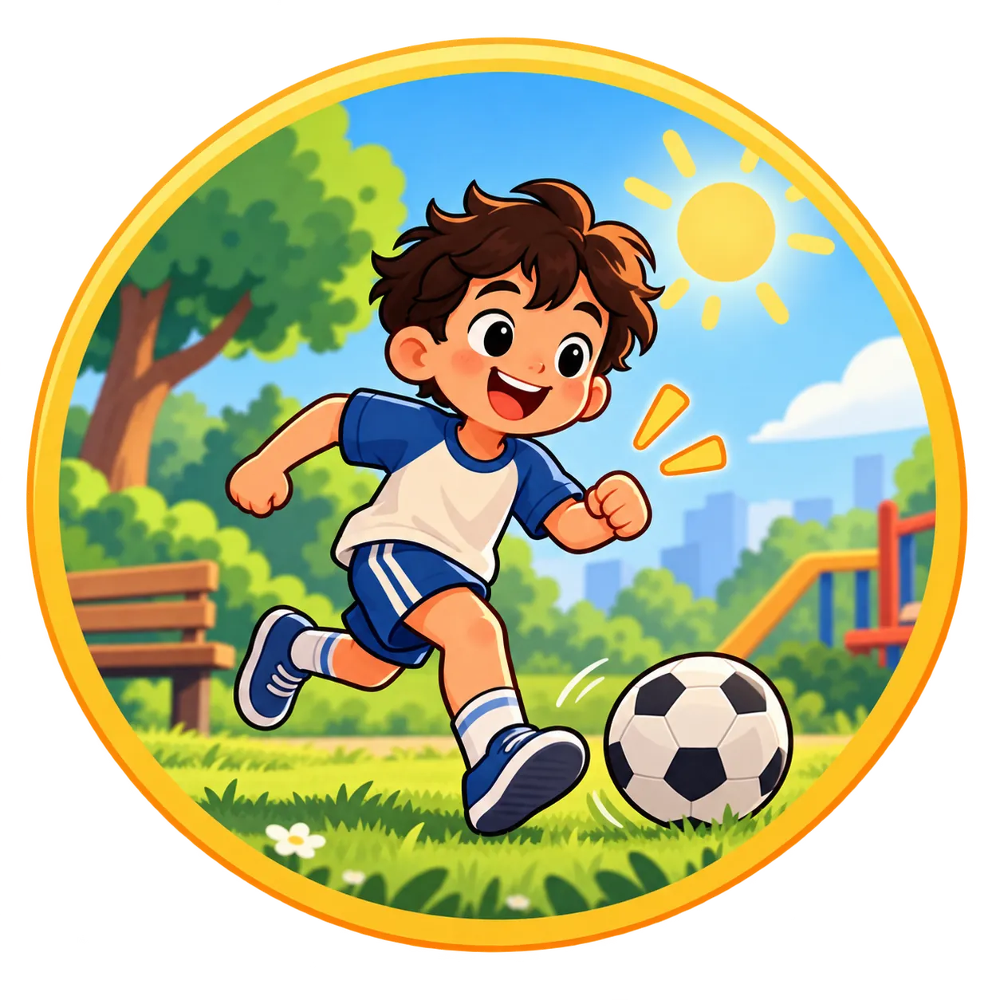
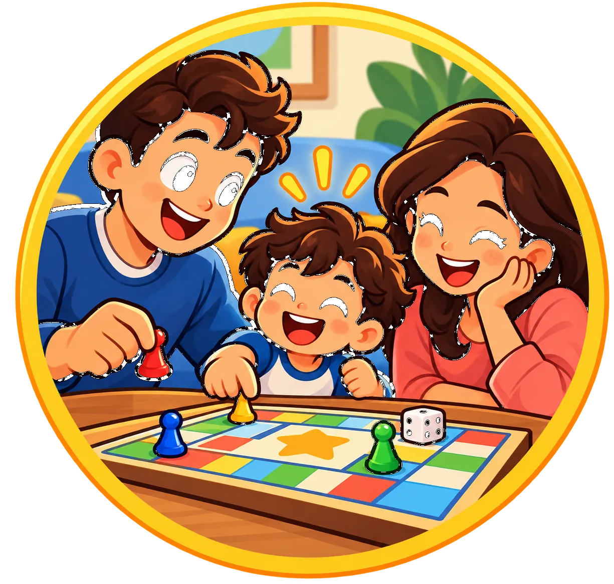
If significant difficulties persist, seek appropriate professional help rather than escalating punishment. A paediatrician, school counsellor or child psychologist is the right next step.
Act when screens consistently interfere with sleep, learning, movement, relationships or everyday life.
Your child will eventually have a phone of their own. They will use YouTube, games, WhatsApp, AI, social media and whatever comes next. You cannot be their permanent screen police.
So the real goal of parenting today is not “How do I control my child's screen time forever?” It is “How do I teach my child to control their own screen time eventually?”
There will be days when you hand over the phone because you need twenty quiet minutes. That's okay. Healthy habits aren't built in one dramatic family meeting. They're built through hundreds of small decisions. Start again tomorrow.
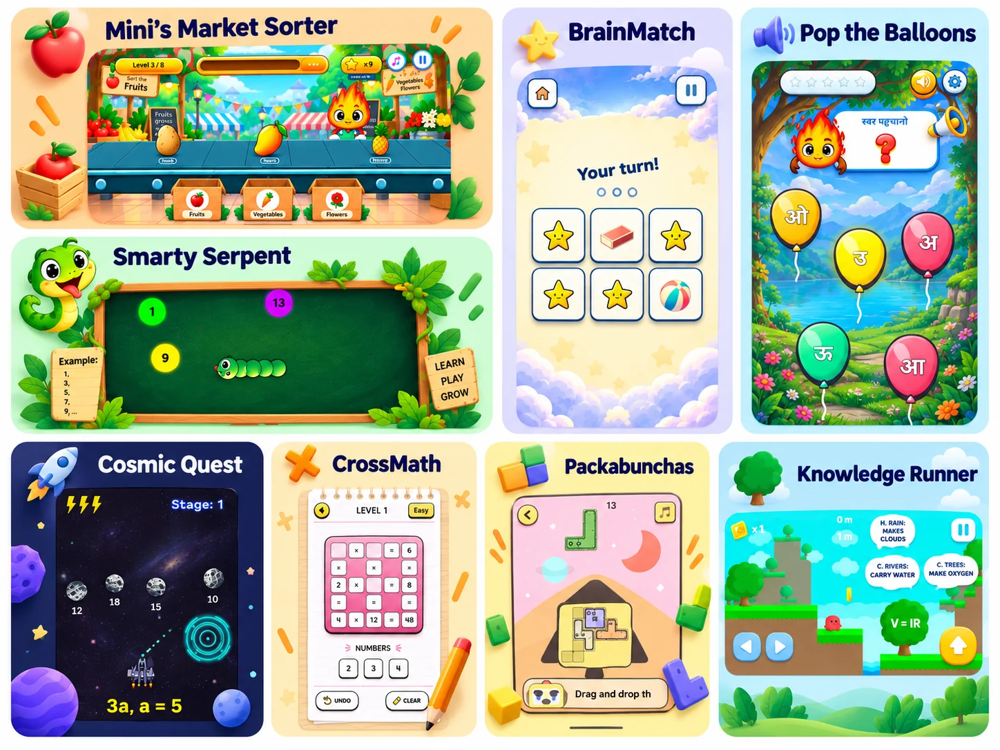
Turn screen time into short, active challenges across Maths, Science, English and Mental Ability, from the makers of Physics Wallah.
Sources & reading